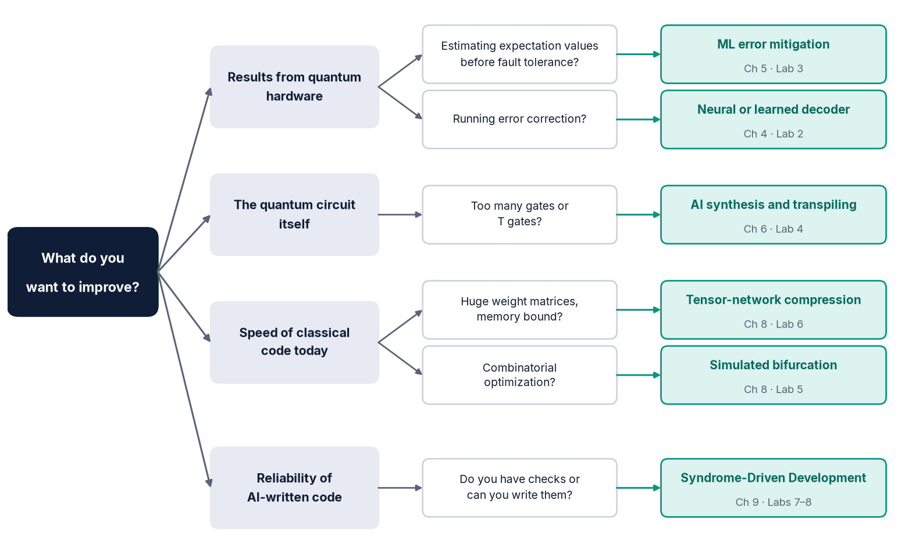
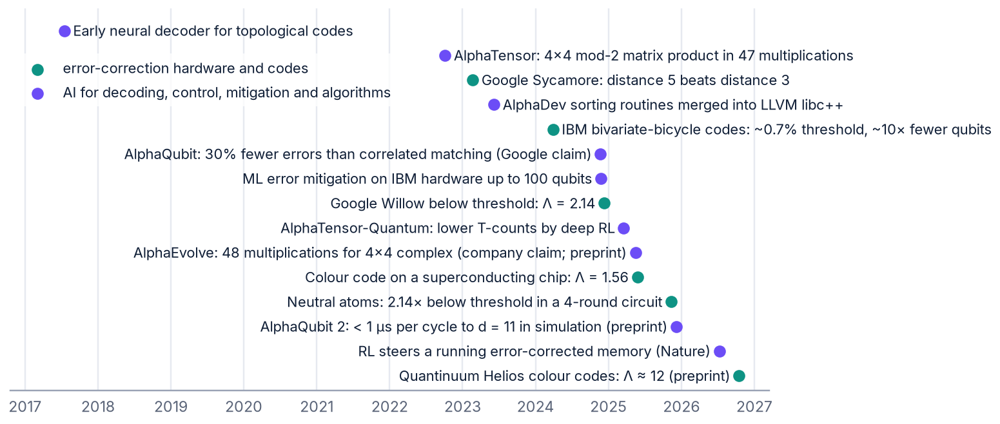

ในบทความนี้
- เลือก failure mode ที่จะปรับปรุงหนึ่งเรื่อง
- อ่าน decision tree จากปัญหาไปสู่ evaluator
- สร้าง metric ledger ก่อนเปลี่ยนระบบ
- โค้ด: แยก quality, cost และ evidence เป็นคนละ gate
- ใช้ timeline เป็นบริบท ไม่ใช่คำสัญญาส่งมอบ
- เขียน experiment proposal ที่ review ได้
- Run & check — รันตัวอย่างด้วยตัวเอง
- Sources & scope — แหล่งอ้างอิงและขอบเขต
In this post
- Choose one failure mode to improve
- Read the decision tree from problem to evaluator
- Build a metric ledger before changing the system
- Code: quality, cost and evidence are separate gates
- Use the timeline as context, not a delivery promise
- Write a reviewable experiment proposal
- Run and check the example
- Sources and scope
เลือก failure mode ที่จะปรับปรุงหนึ่งเรื่อง
ดาวน์โหลดหนังสือและโค้ดประกอบ
ดาวน์โหลด Below Threshold ฉบับเต็ม (PDF ภาษาอังกฤษ · 104 หน้า · 5.4 MB)
อ่านบน Google Drive · ดาวน์โหลดตัวอย่าง Python ทั้งสิบบท (ZIP)
บทที่ 10/10 · บทเรียนดัดแปลงจาก Below Threshold: AI, Quantum Errors and Better Code ฉบับ 1.0 บทที่ 10 หน้า 78–81
พื้นฐานคือความต่างที่เรียนตลอดซีรีส์: physical กับ logical error, correction กับ mitigation, optimization กับ equivalence และ generation กับ selection เป้าหมายคือออกแบบ experiment proposal ที่ยอมรับความล้มเหลวตามหลักฐานได้ ต้องมี problem, baseline, metric และ decision rule อย่างละหนึ่งชุด
บทสุดท้ายของหนังสือไม่ได้กำหนดว่า “เพิ่ม AI” เป็นขั้นตอนสำหรับทุกปัญหา แต่ถามว่า error หรือต้นทุนเข้ามาตรงไหน หาก syndrome information ถูกทำลาย การเปลี่ยน inference engine อย่างเดียวกู้กลับไม่ได้ หากวงจรถูกต้องแต่แพงเกินไป ให้ค้นหา representation ที่ equivalent หากโปรแกรมจาก AI มี bug ร่วมกัน การเพิ่ม samples อาจย้ำ bug นั้น เว้นแต่ checks จะเปิดเผย fault
เริ่มด้วยประโยคที่ reviewer ตัดสินได้: “สำหรับ input distribution นี้และ resource budget คงที่ เราจะเปรียบเทียบ candidate นี้กับ baseline นี้โดยใช้ outcome นี้” ประโยคนี้กำหนดหลักฐานที่จะเก็บ และป้องกันไม่ให้ demo ที่สำเร็จบนคนละงานมาแทนเป้าหมายเดิมโดยไม่รู้ตัว
อ่าน decision tree จากปัญหาไปสู่ evaluator


ตามภาพจากสิ่งที่ต้องการปรับปรุง สำหรับ logical failures ให้เริ่มจาก code และ noise model แล้วเทียบ decoders บน held-out shots สำหรับ expectation estimates ที่มี bias ให้เทียบ mitigation methods ภายใต้งบการทดลองคงที่ สำหรับวงจรราคาแพงให้ตรวจ equivalence และเปรียบเทียบ gate costs ที่เกี่ยวข้อง ส่วน classical optimization หรือ compression ต้องเทียบกับ classical algorithm หรือ representation อีกแบบ
สำหรับ AI-written code ต้องวัดทั้งคุณภาพ candidates และคุณภาพ selection โมเดลที่เก่งขึ้นปรับปรุง pool ส่วน check ที่ดีขึ้นแยก candidates ที่มีอยู่แล้วได้ นี่เป็น intervention คนละอย่างและควรทดลองแยก selector เลือกโปรแกรมที่ถูกไม่ได้หากไม่มีใครสร้างมา และ oracle ที่เห็น hidden answers ไม่ใช่ baseline ที่ deploy ได้
เลือกเทคนิคที่มี evaluator ซึ่งตรวจได้อย่างอิสระ circuit synthesis บน binary matrices เล็กให้ exact equivalence, noisy decoding ให้ statistical scoring ส่วน software properties ทั่วไปให้หลักฐานบางส่วน ปรับความแรงของข้ออ้างให้ตรงกับ evaluator แทนการมองผลสีเขียวทุกชนิดเป็น proof ระดับเดียวกัน
สร้าง metric ledger ก่อนเปลี่ยนระบบ
| งาน | ต้องวัดร่วมกัน | Baseline |
|---|---|---|
| Decoding | Logical error, throughput, reaction latency | Matching สำหรับ surface code หรือ baseline ที่เหมาะกับ code นั้น |
| Mitigation | Estimation error, shots, runtime และ training cost | Raw estimates และวิธีมาตรฐานที่ระบุชัด |
| Compilation | Equivalence, two-qubit count, depth หรือ T-count | Textbook หรือ production compiler ที่ประกาศไว้ |
| Optimization | Distributions ของคำตอบและ time-to-target | Classical search ที่แข็งแรงและ exact small cases |
| Compression | Bytes, arithmetic, latency และ accuracy | Dense model เดิมบนอุปกรณ์เดียวกัน |
| AI code | Sample failure, checked selection, escapes และ cost | One sample และ behavioural voting |
แสดง denominators ให้ชัด logical error ต่อ round ไม่ใช่ per-shot error หลังหลาย rounds relative error reduction ไม่ใช่การเปลี่ยนแบบ percentage points weights ของ layer ที่ย่อแล้วไม่ใช่ memory ของโมเดลทั้งตัว training cost และ per-request cost ควรอยู่คนละคอลัมน์ ก่อนรวมตาม total cost model ที่ตรงกับ deployment
ใช้ held-out observations จากเงื่อนไขที่จะพบจริง เก็บ uncertainty estimates และ paired outcomes เมื่อวิธีต่าง ๆ ใช้ inputs ร่วมกัน device drift, circuit family ใหม่ หรือ task distribution ที่ยากขึ้นอาจทำให้ผลเดิมใช้ไม่ได้ทั้งที่โค้ดไม่เปลี่ยน
โค้ด: แยก quality, cost และ evidence เป็นคนละ gate
toy example ใหม่นี้ใช้ counts สมมติ ไม่ใช่ experimental data จากหนังสือ กฎตัวอย่างกำหนดให้ failure rate ลดลงอย่างน้อย 20% แบบ relative และ runtime เพิ่มไม่เกิน 20% โดยต้องมี held-out evaluation และ equivalence evidence เกณฑ์เหล่านี้เป็น product choices ไม่ใช่มาตรฐานวิทยาศาสตร์สากล
"""Toy release gate: quality, cost, and complete evidence are separate checks."""
baseline = {"failures": 50, "trials": 1000, "seconds": 1.0}
experiments = {
"accurate but slow": {"failures": 20, "trials": 1000, "seconds": 1.6,
"held_out": True, "equivalent": True},
"candidate": {"failures": 30, "trials": 1000, "seconds": 1.1,
"held_out": True, "equivalent": True},
"training-only": {"failures": 1, "trials": 1000, "seconds": 1.0,
"held_out": False, "equivalent": True},
}
def evaluate(run):
if not run["held_out"] or not run["equivalent"]:
return "INCOMPLETE EVIDENCE"
error = run["failures"] / run["trials"]
reference = baseline["failures"] / baseline["trials"]
quality_ok = error <= reference * 0.8
cost_ok = run["seconds"] <= baseline["seconds"] * 1.2
return "PILOT" if quality_ok and cost_ok else "REVISE"
print("Toy gate: >=20% relative error reduction; <=20% runtime increase")
for name, run in experiments.items():
print(f"{name}: error={run['failures']/run['trials']:.1%}, "
f"time={run['seconds']:.1f}s -> {evaluate(run)}")
assert evaluate({**experiments["candidate"], "held_out": False}) == "INCOMPLETE EVIDENCE"
assert evaluate({**experiments["candidate"], "equivalent": False}) == "INCOMPLETE EVIDENCE"Toy gate: >=20% relative error reduction; <=20% runtime increase
accurate but slow: error=2.0%, time=1.6s -> REVISE
candidate: error=3.0%, time=1.1s -> PILOT
training-only: error=0.1%, time=1.0s -> INCOMPLETE EVIDENCEตัวเลือก accurate-but-slow ลด failures ได้แต่เกิน time budget จึงคืน REVISE ตัวเลือก training-only รายงาน error ต่ำที่สุดแต่คืน INCOMPLETE EVIDENCE ส่วน candidate ผ่านตัวเลขทั้งสองเกณฑ์จึงคืน PILOT โดยตั้งใจยังไม่แนะนำ release
script นี้สอนการจัดบัญชีหลักฐาน ไม่ใช่ statistical acceptance มันไม่คำนวณ confidence intervals, ตรวจ distribution shift หรือวัดระบบจริง production gate ต้องมีการตรวจเหล่านี้และ policy สำหรับ rollback หรือ abstention การระบุให้ชัดป้องกันไม่ให้ threshold บรรทัดเดียวกลายเป็นคำรับรอง reliability ที่เกินหลักฐาน
ใช้ timeline เป็นบริบท ไม่ใช่คำสัญญาส่งมอบ


timeline นี้นำมุมมองเดือนพฤศจิกายน 2026 ของหนังสือมาแสดง milestones ด้าน hardware และ AI labels แยก peer-reviewed results, preprints และ company plans roadmap เป็นหลักฐานของเจตนา ไม่ใช่หลักฐานว่า production system ผ่าน requirements ด้าน latency, logical error หรือความคุ้มค่าของคุณแล้ว
คำถามที่ยังสำคัญคือ learned decoders รับมือ drift อย่างไร, throughput และ reaction latency เข้ากับ control stack หรือไม่ และ exact checks จะขยายเกินวงจรเล็กได้อย่างไร ผล hardware ที่ต่ำกว่า threshold กับ simulation uniform-noise ในหนังสือก็ใช้ noise models ต่างกัน suppression factors ที่ใกล้กันไม่ได้ทำให้ใช้แทนกันได้
สำหรับคอร์สสิบสองสัปดาห์ ให้ตามลำดับของหนังสือ: สัปดาห์ 1–3 เรียน errors, repetition และ thresholds; สัปดาห์ 4–6 เทียบ decoders กับ mitigation; สัปดาห์ 7–8 เรียน compilation และ evaluators; สัปดาห์ 9 ทดลอง quantum-inspired algorithms; สัปดาห์ 10–11 เรียน voting, checks และ SDD; สัปดาห์ 12 รายงานโครงการเทียบ baseline ทุกช่วงควรจบด้วย executable artifact และข้อความที่ระบุว่ามันยังพิสูจน์อะไรไม่ได้
เขียน experiment proposal ที่ review ได้
แก้ toy gate ให้กำหนด memory ceiling เพิ่มจาก runtime ใส่ candidate ที่คุณภาพดีมากแต่ไม่มี memory evidence ผลต้องยังเป็น incomplete เพราะ measurement ที่ขาดต้องไม่ถูกแปลงเป็นศูนย์โดยเงียบ ๆ จากนั้นเปลี่ยน baseline failure count แล้วอธิบายว่า relative improvement เปลี่ยนอย่างไร
สำหรับโครงการจริง สร้าง record หนึ่งหน้าที่มี task และ input distribution, trusted baseline, candidate method, frozen checks, training และ evaluation data ที่แยกกัน, resource budget, uncertainty plan, failure policy และ reproducibility record เลือก lab จากบทใดบทหนึ่งเป็นจุดเริ่มต้น แทนการรวมทุกเทคนิคพร้อมกัน
ผลตัดสินอาจเป็น adopt, revise, collect more evidence หรือ abandon experiment ที่ออกแบบดีมีประโยชน์แม้ candidate แพ้ เพราะช่วยระบุ bottleneck และเหลือ evaluator ที่แข็งแรงขึ้นสำหรับครั้งถัดไป นี่คือนิสัยเชิงวิศวกรรมที่เชื่อม error correction, คณิตศาสตร์ quantum-inspired และการเขียนโปรแกรมด้วย AI อย่างเชื่อถือได้ตลอดหนังสือ
Run & check — รันตัวอย่างด้วยตัวเอง
ตัวอย่างสำหรับสอนนี้ใช้ Python standard library เท่านั้น บันทึก ch10.py แล้วรันด้วย Python 3.10 ขึ้นไป โดย assertions ตรวจ invariant ที่อธิบายในบท
python3 ch10.pyตัวอย่างทั้งสิบบทและผลลัพธ์ที่คาดหวัง (ZIP) · อ่าน source บน GitHub
Sources & scope — แหล่งอ้างอิงและขอบเขต
เอกสารและหลักฐาน
โครงบท ภาพที่ให้เครดิต และผล lab ที่รายงานมาจากหนังสือของผู้เขียน ณ November 2026 ตัวอย่างสั้นที่ใช้ standard library รันเพื่อตรวจบทเรียนเว็บวันที่ 25 November 2026 เป็นแบบจำลองเพื่อสอน ไม่ได้รันซ้ำการทดลอง Stim, neural network, mitigation หรือ LLM ฉบับเต็มในหนังสือ ข้ออ้าง hardware, simulator, preprint และบริษัทคงขอบเขตตามที่ระบุ
- Anirach Mingkhwan. Below Threshold: AI, Quantum Errors and Better Code. Edition 1.0 (November 2026), Chapter 10, pp. 78–81.
- Google Quantum AI and Collaborators. Quantum error correction below the surface code threshold (2025).
- Gidney. Stim: a fast stabilizer circuit simulator (2021).
- Chen et al. Evaluating Large Language Models Trained on Code (2021, preprint).
Choose one failure mode to improve
Download the book and examples
Download the complete Below Threshold book (English PDF · 104 pages · 5.4 MB)
Read on Google Drive · Download all ten Python examples (ZIP)
Chapter 10/10. A tutorial adaptation of Below Threshold: AI, Quantum Errors and Better Code, Edition 1.0, Chapter 10, pp. 78–81.
Prerequisites: the distinctions introduced across the series: physical versus logical error, correction versus mitigation, optimization versus equivalence, and generation versus selection. The goal is to leave with an experiment proposal that can fail honestly. You need one problem, one baseline, one metric and one decision rule.
The book’s final chapter does not prescribe “add AI” as a universal step. It asks where the error or cost enters. If syndrome information has been destroyed, changing the inference engine alone cannot reconstruct it. If a correct circuit is too expensive, search for an equivalent representation. If AI-written programs share a bug, additional samples may reinforce it unless checks expose the fault.
Start with a sentence a reviewer can evaluate: “For this input distribution and fixed resource budget, we will compare this candidate with this baseline using this outcome.” That sentence defines the evidence to collect and prevents a successful demonstration on a different task from silently replacing the original goal.
Read the decision tree from problem to evaluator
Follow the diagram from the thing you want to improve. For logical failures, begin with a code and noise model, then compare decoders on held-out shots. For biased expectation estimates, compare mitigation methods at a fixed experimental budget. For costly circuits, verify equivalence and compare the relevant gate costs. For classical optimization or compression, the comparator is another classical algorithm or representation.
For AI-written code, measure both candidate quality and selection quality. A stronger model can improve the pool; a better check can distinguish candidates already present. These are different interventions and should receive separate experiments. A selector cannot choose a correct program that nobody generated, and an oracle that sees hidden answers is not a deployable baseline.
Prefer a technique with an evaluator you can independently validate. Circuit synthesis on small binary matrices offers exact equivalence; noisy decoding offers statistical scoring; general software properties usually offer partial evidence. Choose the strength of the claim to match the evaluator rather than treating every green result as the same kind of proof.
Build a metric ledger before changing the system
| Work | Measure together | Baseline |
|---|---|---|
| Decoding | Logical error, throughput, reaction latency | Surface-code matching; a code-specific baseline otherwise |
| Mitigation | Estimation error, shots, runtime and training cost | Raw estimates and a specified conventional method |
| Compilation | Equivalence, two-qubit count, depth or T-count | Declared textbook or production compiler |
| Optimization | Solution distributions and time-to-target | Strong classical search; exact small cases |
| Compression | Bytes, arithmetic, latency and accuracy | Original dense model on the same device |
| AI code | Sample failure, checked selection, escapes and cost | One sample and behavioural voting |
Keep denominators visible. Logical error per round is not per-shot error after many rounds. A relative error reduction is not a percentage-point change. A reduced layer’s weights are not the complete model’s memory. Training cost and per-request cost belong in different columns, then in the total cost model relevant to the deployment.
Use held-out observations drawn from the conditions you expect to encounter. Retain uncertainty estimates and paired outcomes where methods share inputs. Device drift, a new circuit family or a harder task distribution can invalidate a previously useful result without changing the code.
Code: quality, cost and evidence are separate gates
This new toy example uses invented counts, not the book’s experimental data. Its illustrative rule requires at least 20% relative reduction in failure rate and at most 20% additional runtime, with held-out evaluation and equivalence evidence present. Those thresholds are product choices, not universal scientific standards.
"""Toy release gate: quality, cost, and complete evidence are separate checks."""
baseline = {"failures": 50, "trials": 1000, "seconds": 1.0}
experiments = {
"accurate but slow": {"failures": 20, "trials": 1000, "seconds": 1.6,
"held_out": True, "equivalent": True},
"candidate": {"failures": 30, "trials": 1000, "seconds": 1.1,
"held_out": True, "equivalent": True},
"training-only": {"failures": 1, "trials": 1000, "seconds": 1.0,
"held_out": False, "equivalent": True},
}
def evaluate(run):
if not run["held_out"] or not run["equivalent"]:
return "INCOMPLETE EVIDENCE"
error = run["failures"] / run["trials"]
reference = baseline["failures"] / baseline["trials"]
quality_ok = error <= reference * 0.8
cost_ok = run["seconds"] <= baseline["seconds"] * 1.2
return "PILOT" if quality_ok and cost_ok else "REVISE"
print("Toy gate: >=20% relative error reduction; <=20% runtime increase")
for name, run in experiments.items():
print(f"{name}: error={run['failures']/run['trials']:.1%}, "
f"time={run['seconds']:.1f}s -> {evaluate(run)}")
assert evaluate({**experiments["candidate"], "held_out": False}) == "INCOMPLETE EVIDENCE"
assert evaluate({**experiments["candidate"], "equivalent": False}) == "INCOMPLETE EVIDENCE"Toy gate: >=20% relative error reduction; <=20% runtime increase
accurate but slow: error=2.0%, time=1.6s -> REVISE
candidate: error=3.0%, time=1.1s -> PILOT
training-only: error=0.1%, time=1.0s -> INCOMPLETE EVIDENCEThe accurate-but-slow option reduces failures but exceeds the time budget, so it returns REVISE. The training-only option has the smallest reported error, yet returns INCOMPLETE EVIDENCE. The candidate meets both numerical criteria and returns PILOT, deliberately stopping short of a release recommendation.
The script teaches bookkeeping, not statistical acceptance. It does not compute confidence intervals, investigate distribution shift or measure a real system. A production gate needs those checks and a rollback or abstention policy. Keeping them explicit avoids turning a one-line threshold into a misleading guarantee of reliability.
Use the timeline as context, not a delivery promise
The timeline reproduces the book’s November 2026 view of hardware and AI milestones. Its labels distinguish peer-reviewed results, preprints and company plans. A roadmap is evidence about intent; it is not evidence that a production system has met your latency, logical error or economic requirements.
The durable questions are how learned decoders behave under drift, whether throughput and reaction latency fit the control stack, and how exact checks can scale beyond small circuits. The hardware below-threshold result and the book’s uniform-noise simulation also have different noise models; similar suppression factors do not make them interchangeable.
For a twelve-week course, follow the book’s progression: weeks 1–3 cover errors, repetition and thresholds; weeks 4–6 compare decoders and mitigation; weeks 7–8 study compilation and evaluators; week 9 studies quantum-inspired algorithms; weeks 10–11 study voting, checks and SDD; week 12 reports a project against a baseline. Each stage should end with an executable artifact and a written statement of what it does not establish.
Write a reviewable experiment proposal
Modify the toy gate to require a fixed memory ceiling as well as runtime. Add one candidate with excellent quality but missing memory evidence. Its result must remain incomplete; a missing measurement must never silently become zero. Then change the baseline failure count and explain how the relative improvement changes.
For a real project, produce a one-page record containing the task and input distribution, trusted baseline, candidate method, frozen checks, separate training and evaluation data, resource budget, uncertainty plan, failure policy and reproducibility record. Choose one chapter’s lab as a starting point rather than combining every technique at once.
The final decision can be adopt, revise, collect more evidence or abandon. A well-designed experiment is useful even when the candidate loses, because it identifies the bottleneck and leaves a stronger evaluator for the next attempt. That is the engineering habit connecting error correction, quantum-inspired mathematics and reliable AI-assisted programming throughout the book.
Run and check the example
This complete teaching example uses only the Python standard library. Save ch10.py, then run it with Python 3.10 or later. Its assertions check the stated invariants.
python3 ch10.pyAll ten examples and expected output (ZIP) · Browse example source on GitHub
Sources and scope
Reading and evidence
The author’s book is the source of the chapter structure, credited diagrams and reported lab results (November 2026 snapshot). The short standard-library example above was executed for this web lesson on 25 November 2026. It is a teaching model; the book’s full Stim, neural-network, mitigation and LLM experiments were not rerun for these posts. Hardware, simulator, preprint and company claims retain their stated scope.
- Anirach Mingkhwan. Below Threshold: AI, Quantum Errors and Better Code. Edition 1.0 (November 2026), Chapter 10, pp. 78–81.
- Google Quantum AI and Collaborators. Quantum error correction below the surface code threshold (2025).
- Gidney. Stim: a fast stabilizer circuit simulator (2021).
- Chen et al. Evaluating Large Language Models Trained on Code (2021, preprint).